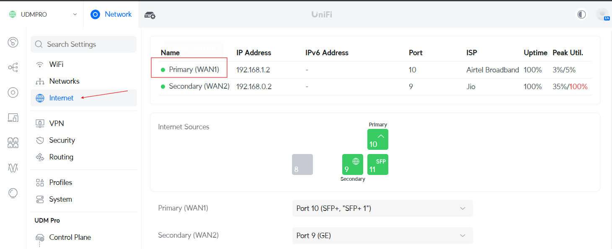
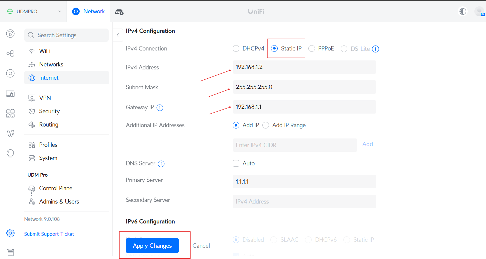
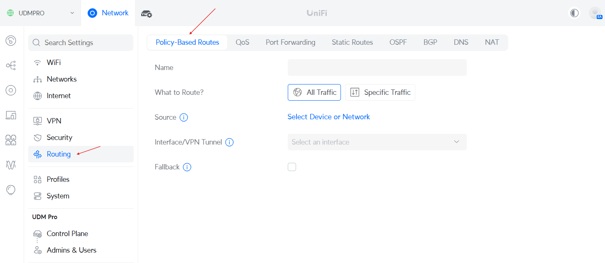
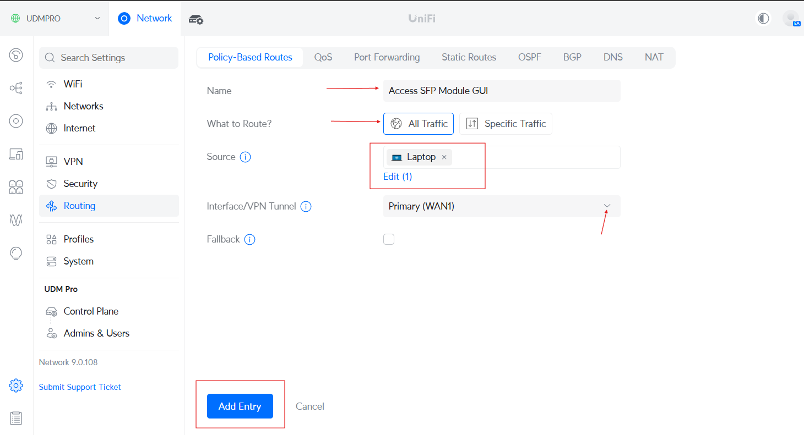
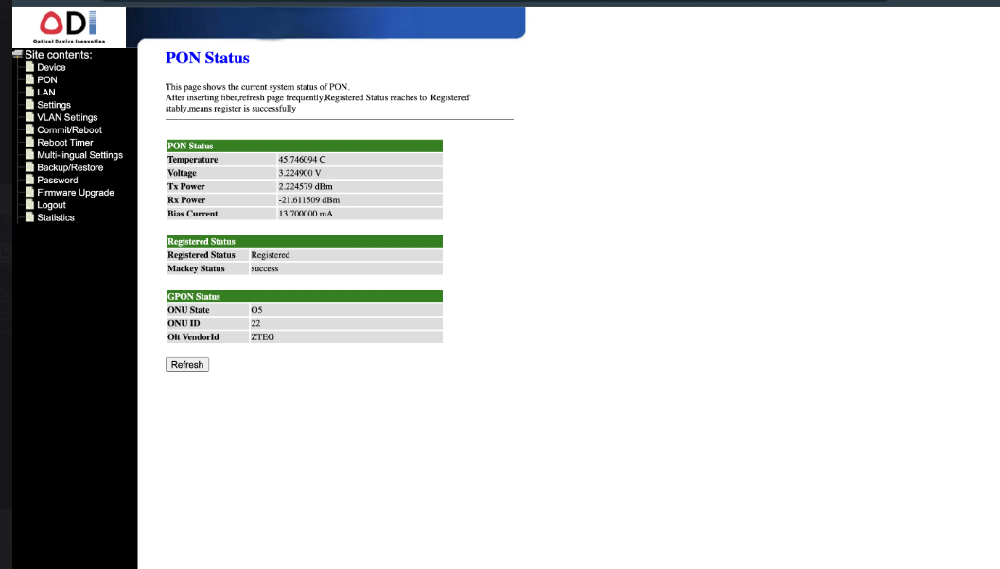

How to Configure an HSGQ ODI DFP-34X-2C2 GPON ONU SFP Module with UDM Pro and Access its GUI
Step 1: Connect the SFP Module to UDM Pro
To begin, insert the SFP module into Port 10 of your UDM Pro. Ensure that the module is firmly seated to establish a proper connection.
Step 2: Assign a Static IP to the SFP Module Port
To configure the SFP module, assign a static IP address to Port 10 on the UDM Pro Console:
- Log in to the UniFi Network Controller.
- Navigate to Settings > Internet > Primary WAN1.
- Scroll down and check for IPv4 Configuration.
- Configure the following static IP settings:
- IP Address: 192.168.1.2
- Subnet Mask: 255.255.255.0
- Gateway: 192.168.1.1
- Apply the settings and wait for the changes to take effect.


Step 3: Configure a Policy-Based Route
To ensure proper communication with the SFP module’s GUI, you need to create a Policy-Based Route:
- Navigate to Settings > Traffic Management > Policy-Based Routes.
- Click Create New Rule.
- Configure the rule as follows:
- Name: Access SFP Module GUI
- What to Route?: All Traffic
- Source: Select your device from the list for which you want to route all traffic through WAN1.
- Save the rule and wait for approximately 1 minute for the changes to propagate.


Step 4: Connect Your System to the UDM Pro
To access the SFP module’s GUI:
- Plug an Ethernet cable from any available port on the UDM Pro into your system.
- Wait for DHCP to assign an IP address to your system from the default DHCP pool of your network.
Step 5: Access the SFP Module’s GUI
Once the Policy-Based Route is applied:
- Open a web browser.
- Enter 192.168.1.1 in the address bar.
- You should now see the SFP Module’s GUI.
- Log in and configure the necessary settings according to your ISP requirements.
